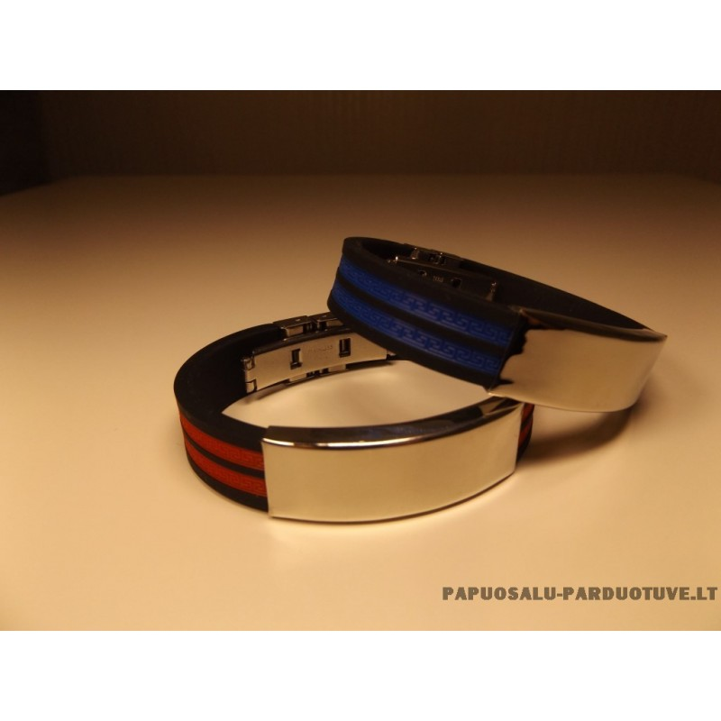

Vyriškos apyrankės
 Pagrindinis Veido kaukės Vyrams Peteliškės Medinės varlytės Vyriškos apyrankės Odinės apyrankės Vyriški kaklo papuošalai Spalvotos kojinės Moterims Kriauklių papuošalai Kaklo papuošalai Chokeriai Papuošalai su augalais Auskarai Auskarai su perlais Sidabriniai auskarai Mediniai auskarai Swarovski auskarai Apyrankės Apyrankės iš karoliukų Raudono siūlo apyrankės Kvepiančios apyrankės Zodiako apyrankės Žiedai Sagės Suknelės Rankinės Akiniai nuo saulės Raktų pakabukai Laikrodžiai moterims Maudymosi kostiumėliai Dovanos Valentino dienos dovanos Dovanos moterims Dovanos vyrams Kalėdiniai vainikai Dekoratyvinės pagalvėlės Gertuvės Apmokėjimas Prekių grąžinimas Prekių pristatymas Blogas Produktas Puiku! Ši prekė jau yra Jūsų krepšelyje.Vyriškos apyrankės
‹ ›
Vyriškos apyrankės “Lava ir hematitas”
12.99 € Į krepšelį ‹ ›Vyriškos apyrankės “Lava inside”
12.99 € Į krepšelį ‹ ›Vyriškos apyrankės “Lava”
12.99 € Į krepšelį ‹ ›Vyriškos apyrankės iš karoliukų “Hematitas”
18.00 € Į krepšelį ‹ ›Vyriškos apyrankės “Matinis oniksas”
12.00 € Į krepšelį ‹ ›Vyriškos apyrankės “Raudona tigro akis”
18.00 € Į krepšelį ‹ ›Apyrankės vyrams “Lavos akmuo ir tigro akis”
10.00 € Į krepšelį Akcija! ‹ ›Vyriškos apyrankės “Blue Lagoon”
19.99 € 11.99 € Daugiau Akcija! ‹ ›Apyrankės vyrams “Gladiatorius”
22.99 € 12.99 € DaugiauVyriškos apyrankės “Matinė tigro akis”
16.50 € Į krepšelįVyriškos apyrankės “Mėlynas kvarcas”
12.00 € DaugiauVyriškos apyrankės “Pilkasis Jaspis”
15.00 € Į krepšelįVyriškos apyrankės “Tigro akis”
15.00 € Į krepšelįVyriškos apyrankės “Paveikslinis Jaspis”
15.00 € Į krepšelįOdinės apyrankės “Begalybė
25.00 € Į krepšelįOdinės apyrankės “Carpe Diem”
25.00 € Į krepšelįOdinės apyrankės “Lietuvos žemėlapis”
25.00 € Į krepšelįOdinė apyrankė “Dviguba jėga”
30.00 € Į krepšelįOdinės apyrankės “Popsas užkniso juodai”
25.00 € Į krepšelįOdinės apyrankės “The best is yet to come”
25.00 € Į krepšelį ‹ ›Vyriška odinė apyrankė “Elegant Panther”
18.00 € Į krepšelį ‹ ›Vyriška odinė apyrankė “Elegant Panther Black”
18.00 € Į krepšelį ‹ ›Vyriška odinė apyrankė “Tribute”
18.00 € Į krepšelį ‹ ›Vyriškas odinė apyrankė “Quiet”
23.00 € Į krepšelį ‹ ›Vyriška odinė apyrankė “Golden Moon”
28.00 € Į krepšelį ‹ ›Vyriška odinė apyrankė “Frozen Breath”
25.00 € Į krepšelį ‹ ›Vyriška odinė apyrankė “Double Tribute”
23.00 € Į krepšelį ‹ ›Vyriška odinė apyrankė “DARK ROCK”
25.00 € Į krepšelį ‹ ›Vyriška odinė apyrankė “DESIRE”
25.00 € Į krepšelįVyriška odinė apyrankė ROCK”
25.00 € Į krepšelį ‹ ›Vyriška odinė apyrankė “TENDER”
25.00 € Į krepšelį ‹ ›Vyriška odinė apyrankė “Playful Droplet”
25.00 € Į krepšelį ‹ ›Vyriška odinė apyrankė “Playful Droplet Silver”
25.00 € Į krepšelįVyriška odinė apyrankė “Playful Droplet Black”
25.00 € Į krepšelįVyriška odinė apyrankė “Velvet Core”
25.00 € Į krepšelį ‹ ›Vyriška odinė apyrankė “Coral Sun Silver”
27.00 € Į krepšelįVyriška odinė apyrankė “Nail”
18.00 € Į krepšelįVyriška odinė apyrankė “Coral Sun”
23.00 € Daugiau ‹ ›Apyrankės vyrams “Lavos galia”
Apyrankė iš natūralių lavos akmenų
13.99 € Daugiau Akcija! ‹ ›Vyriškos apyrankės iš natūralių akmenų “Italiano”
21.99 € 12.99 € Daugiau Akcija! ‹ ›Apyrankės vyrams iš karoliukų “Skaidruma”
21.99 € 12.99 € DaugiauOdinės apyrankės “Black Hawk”
9.99 € DaugiauOdinės apyrankės “Blue sky”
PASKUTINĖ PREKĖ!
9.99 € DaugiauOdinės apyrankės “Look”
9.99 € DaugiauOdinės apyrankės “Light Coffee”
Odinė apyrankė
9.99 € DaugiauVyriškos apyrankės internetu. Apyrankės vyrams vienas geriausiai žinomų ir seniausių papuošalų istorijoje.
Mūsų pagamintos apyrankės vyrams tai puikus ir stilingas aksesuaras savimi pasitikinčiam vyru ar vaikinuii! Vyriškos apyrankės dažniausiai gaminamos iš natūralios ar net eko odos, įvairaus metalo ar vilnos. Vyriškos apyrankės internetu gali būti drąsiai derinamos ir prie kostiumo, marškinių ar laisvalaikio stiliaus. Mūsų apyrankės vyrams nešiojamos net ir prie klasikinių drabužių, tai matosi iš didėjančios pasiūlos ir įvairovės. Šiais laikais, kai mūsų apranga sunkiai begali stebinti savo originalumu apyrankės vyrams internetu puiki išeitis būti išskirtiniu ir pastebėtu. Tai naujas mados klyksmas.
Vyriškos apyrankės suteikia savitumo, o ypač jei apyrankė turi savo prasmę. Ypatingai dabar populiarėja apyrankės gaminamos iš odos. Tokios apyrankės madingos ir neleidžia atrodyti monotoniškai. Naujas mados klyksmas yra ir vyriškos apyrankės iš jūrinės virvės. Įvairiausių tekstūrų, variantų apyrankės vyrams. Gaminame ir visiškai išskirtinių, vienetinių vyriškų apyrankių ant kurių galima išgraviruoti tam tikrus simbolius ar inicialus. Apyrankės vyrams internetu labai patogu pirkti sau ar dovanų draugui! Tad žiūrėkite ir rinkitės savo apyrankes ir atrodykite stilingai jau dabar!
Pagrindinis Apie mus Auskarai akcijos Dekoratyvinės pagalvėlės VARLYTES Sąlygos Kontaktai Susisiekite +370 658 64243 +370 613 73152 info@norunamai.lt adresas g. 6, LT-48222 Kaunas Visos teisės saugomos. Internetinė parduotuvė www.norunamai.ltBet kokios informacijos platinimas be raštiško www.norunamai.lt sutikimo yra draudžiamas. Mes naudojame slapukus, kurie užtikrina, kad Jums bus patogu naudotis tinklalapiu. Jei toliau naršysite mūsų tinklalapyje, tai tolygu Jūsų sutikimui su slapukų naudojimu. Gerai